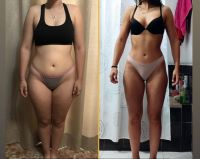
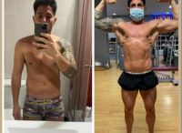
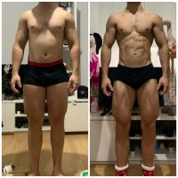
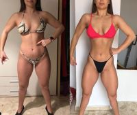
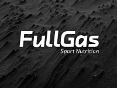
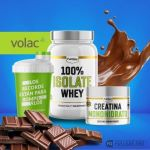

QUIÉN SOY

Soy David Álvarez y aun que creas que no, tenemos muchas más cosas en común de las que
piensas; Yo también me encontré en ese momento en el que quise dar un giro y cambiar mi
aspecto físico, empecé a cuidarme mi alimentación hasta que acabé convirtiéndolo en mi
trabajo.
- Licenciado en ciencias de la actividad física y el deporte.
- Máster en Nutrición deportiva en la mejora del rendimiento deportivo.
- Especialista en nutrición Natural y Deportiva
- Entrenador y preparador físico Desde hace más de 16 años
SERVICIOS
Me llena de satisfacción ofrecer una gran variedad de servicios de nutrición y entrenamiento
diseñados para transformar tu vida y mejorar tu salud y bienestar.
Como especialista en el secto creo en el poder de una alimentación equilibrar y adaptada a
tus necesidades como usuario principiante , medio , o alto.
Mis servicios son:
- ASESORAMIENTO NUTRICIONAL PERSONALIZADO Y AVANZADO
Desarrollaré un plan adaptado a tus necesidades, estilo de vida y objetivos


- ¡¡¡PIERDE PESO DE MANERA SOSTENIBLE!!!
Sobre todo nos centraremos en hábitos alimenticios inteligentes , aprenderemos a comer
y te daré el apoyo que necesitas para ayudarte a alcanzar y mantener tu peso ideal


- NUTRICIÓN DEPORTIVA
Tendrás como opción utilizar suplementación deportiva. Ya seas atleta o simplemente
un usuario que quiere transformar su cuerpo, te proporcionaré herramientas para optimizar
tu energía, resistencia y recuperación.
Siempre ofrezco a mis clientes las marcas en las que yo confío o considero mejores, así que ofrezco un 20% de descuento
en productos de FullGas

